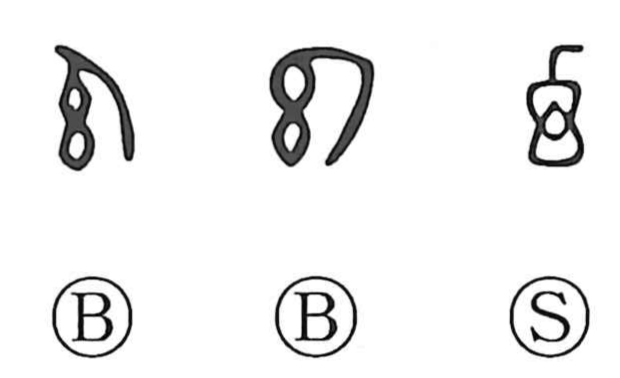

幻

Kun: maboroshi | On: gen
illusion ・ phantom ・ to delude
Explanation
Shirakawa reads 幻 as a pictograph formed by inverting 予. The graph 予 originally depicted a weaving shuttle (杼) carrying the weft across the warp. In 幻 the shuttle is shown turning back—the reverse pass—evoking the deft, alternating motion to left and right as cloth is woven. From this image of to-and-fro shuttling comes the sense of throwing the gaze off balance, confusing or perplexing the viewer, and thus the character came to signify illusion, conjuring that deceives the eye, and phantoms.